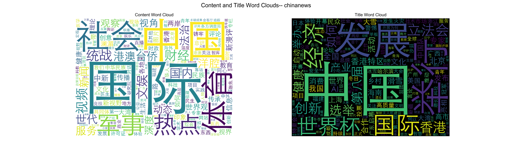
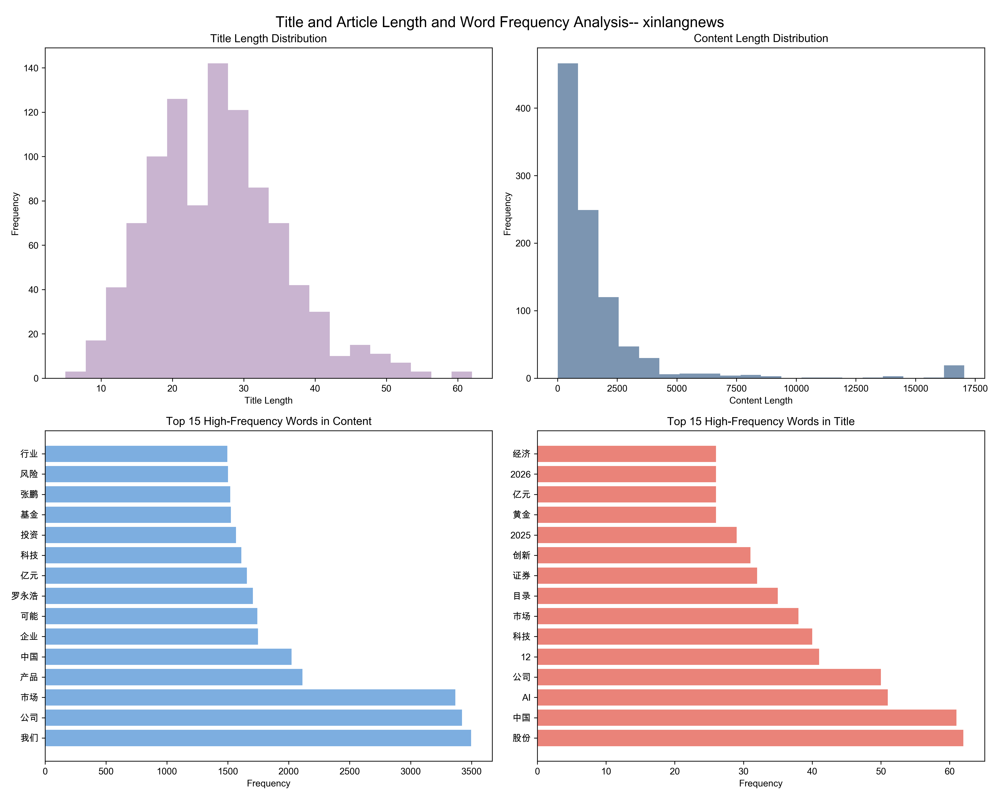

End-to-End Chinese News Analytics: From Web Crawling to Co-occurrence, PMI, and Document Similarity
Overview
This repository implements a programming-first, end-to-end data science workflow on contemporary Chinese news. We collect our own datasets from ChinaNews and Sina News via web crawling, perform rigorous data cleaning and management, and conduct interpretable analytics including adjacent character co-occurrence probabilities, pointwise mutual information (PMI), word frequency analysis, and document-level mutual information. The pipeline emphasizes reproducibility, code-driven analysis, and visual storytelling through heatmaps, histograms, network graphs, and word clouds.
Key contributions:
Self-collected datasets from two major Chinese news sources (ChinaNews and Sina News).
Clean, reproducible pipeline for co-occurrence and PMI analysis at the character level.
Word-level insights (frequency distributions, word clouds) and article complexity metrics.
Document-level mutual information and comprehensive visualizations for comparative analysis.
Motivation & Team Background
Motivation
Public news streams are a widely available, continuously updated signal about markets, policy, technology, and social narratives. They offer rich linguistic patterns—collocations, stylistic markers, and topical signifiers—that can be analyzed programmatically without relying on opaque models.
How to build a fully reproducible, interpretable, and code-centric pipeline that transforms raw web news into actionable analytics—discovering strong adjacent collocations (via co-occurrence probabilities and PMI), surfacing topical markers (via word frequency), and quantifying article similarity (via document-level mutual information). The project answers: “What lexical structures and stylistic tendencies characterize different news outlets, and how can we compare them in a transparent, programming-first way?”
Interpretability and transparency are critical in data science—especially for text analytics used in decision-making and monitoring. Our approach favors clear, auditable metrics over black-box accuracy.
Reproducibility: By focusing on end-to-end programming (web crawling → cleaning → engineered analytics → visualizations), we demonstrate a practical template that others can extend or audit.
Practical relevance: Collocational strength and document similarity inform downstream tasks (keyword expansion, topic discovery, content curation), and support comparative media studies (e.g., economic vs. national focus across outlets).
Team Background
The team combines strengths in Python programming, web scraping, Chinese NLP preprocessing, and visualization. Roles span data collection, cleaning/engineering, exploratory analysis, PMI and co-occurrence modeling, and report/presentation.
Team Members:
mc56730 — WU QIWEI
mc56733 — GUO XIAOYU
mc56565 — KANG PENGFEI
mc56677 — QIU WENLE
mc56688 — TIAN JISHENG
Strengths and experience:
[QIU WENLE and KANG PENGFEI] Web scraping & data acquisition: Experience with Selenium (headless Chrome),
requests,BeautifulSoup, and handling dynamic page structures, delays, and parsing fallbacks.[TIAN JISHENG and WU QIWEI] Data engineering & cleaning: Proficiency in
pandas/numpy, regex-based normalization, Chinese text filtering, and building reusable pipelines with explicit inputs/outputs.[GUO XIAOYU、TIAN JISHENG and KANG PENGFEI] Chinese NLP preprocessing: Familiarity with
jiebatokenization, stop-word handling, and Chinese character-level analysis for co-occurrence and PMI.[WU QIWEI、QIU WENLE and GUO XIAOYU] Visualization & communication: Expertise in
matplotlib/seaborn/networkx/wordcloud, visual storytelling, figure annotation, and report structuring.
Influence on topic choice:
The team’s skill set naturally aligns with a programming-first, interpretable approach. Rather than optimizing complex models, we prioritized robust pipelines, transparency, and reproducibility.
Domain familiarity with Chinese media (business/tech/governance reporting) guided dataset selection (ChinaNews vs. Sina News) and the focus on contrasts between outlets.
Supporting domain knowledge:
Awareness of journalistic style conventions and common formal expressions in Chinese news informed stop-word design, collocation expectations, and interpretation of high-PMI pairs.
Basic statistics and information theory (PMI, KL/MI) shaped metric choices and the design of document-level similarity analysis.
Data
Sources and scale
ChinaNews: 10 scroll pages crawled (news1.html to news10.html); titles and article content collected into
data/chinanews.csv(965 articles).Sina News: 20 roll pages crawled; titles and article content collected into
data/xinlangnews.csv(975 articles).
Collection methodology
Dynamic pages: Headless Chrome via
seleniumandwebdriver-manager; standardized User-Agent; randomized delays (time.sleepwith uniform/rand) to reduce bot detection.Content extraction:
requestsfor article pages;BeautifulSoup+lxmlparsing; removal of ads/script/style/image/iframe blocks; fallbacks for multiple page templates (e.g.,id='artibody',class='article',class='content').Cleaning: HTML stripping, whitespace normalization, retention of Chinese characters and common punctuation; removal of specific trailing promotional segments (e.g., “海量资讯、精准解读”), editor notes (e.g.,
【编辑:...】).
Data artifacts (examples)
Raw CSVs:
data/chinanews.csv,data/xinlangnews.csvAnalysis results:
data/*_analysis_results_{corpus,cooccur_prob,char_count,pmi_result}.{txt,json,csv}Cleaned artifacts:
data/*_cleaned_{char_count,cooccur_prob}.jsonPMI special outputs:
data/*_pmi_analysis.{json,csv}Document MI outputs:
data/*_document_mutual_info_results.csvPMI comparison:
data/cleaned_pmi_comparison_results.csv,data/cleaned_pmi1.json,data/cleaned_pmi2.json
Ethics & licensing
Publicly accessible content collected strictly for academic coursework.
Respectful scraping: randomized delays, standard UA, exclusion of non-content and ads.
No benchmark datasets; all data is self-collected per Course_Project_Guidelines.
For removal requests or additional licensing clarifications, please open an issue.
Repository Structure
.├── Data_Collection_ChinaNews.ipynb # web crawling: ChinaNews├── Data_Collection_XinlangNews.ipynb # web crawling: Sina News├── Data_Analysis_ChinaNews.ipynb # corpus cleaning, co-occurrence, PMI (ChinaNews)├── Data_Analysis_XinlangNews.ipynb # corpus cleaning, co-occurrence, PMI (Sina)├── Data_Processing_corpus_prob_analysis_ChinaNews.ipynb # cleaned co-occurrence + viz (ChinaNews)├── Data_Processing_corpus_prob_analysis_XinlangNews.ipynb # cleaned co-occurrence + viz (Sina)├── Data_Processing_pmi_analysis.ipynb # cleaned PMI comparison (Sina vs. ChinaNews)├── Data_Visualization_word_frequency_analysis.ipynb # word frequency, word clouds, complexity├── Data_Visualization_articles_avg_pmi_analysis.ipynb # document-level MI matrix & viz├── data/ # datasets & derived artifacts (CSV/JSON/TXT)├── README.assets/ # pictures for Report├── picture/ # saved figures (PNG)├── README.md # Description of Our Project├── Course_Project_Guidelines.md # course instruction reference├── GroupBT_Presentation.pptx # GroupBT Presentation PPTX├── GroupBT_Presentation.mp4 # GroupBT Presentation Video├── GroupBT_Report.pdf # GroupBT Report(pdf)├── GroupBT_Report.html # GroupBT Report(html)--Recommendation└── requirements.txt # environment dependencies
Environment & Installation
x# Create and activate a virtual environmentpython -m venv .venv# macOS/Linuxsource .venv/bin/activate# Windows PowerShell# .venv\Scripts\Activate.ps1
# Install dependenciespip install -r requirements.txtDependencies include:
Web scraping:
selenium,webdriver-manager,requests,beautifulsoup4,lxmlProcessing & analysis:
pandas,numpy,jiebaVisualization:
matplotlib,seaborn,networkx,wordcloud,Pillow
How to Reproduce (Run Order)
You can run the full pipeline from scratch or start from provided data artifacts.
Option A: Full pipeline (from raw collection)
Data collection
Data_Collection_ChinaNews.ipynbData_Collection_XinlangNews.ipynbOutputs:
data/chinanews.csv,data/xinlangnews.csv
Base analysis and PMI computation
Data_Analysis_ChinaNews.ipynb→data/chinanews_analysis_results_*,data/chinanews_pmi_analysis.{json,csv}Data_Analysis_XinlangNews.ipynb→data/xinlangnews_analysis_results_*,data/xinlangnews_pmi_analysis.{json,csv}
Cleaned co-occurrence and visualization
Data_Processing_corpus_prob_analysis_ChinaNews.ipynb→data/chinanews_cleaned_*,picture/chinanews_cleaned_*Data_Processing_corpus_prob_analysis_XinlangNews.ipynb→data/xinlangnews_cleaned_*,picture/xinlangnews_cleaned_*
Cleaned PMI comparison (cross-source)
Data_Processing_pmi_analysis.ipynb→data/cleaned_pmi_*,picture/cleaned_pmi_comparison_analysis.png
Word frequency and article complexity
Data_Visualization_word_frequency_analysis.ipynb→picture/{basedata}_xlres.png,picture/{basedata}_wordclouds.png,picture/{basedata}_complexity_analysis.png
Document mutual information (pairwise article MI)
Data_Visualization_articles_avg_pmi_analysis.ipynb→data/{basedata}_document_mutual_info_results.csv,picture/{basedata}_document_mutual_info_analysis.png
Option B: Use existing data artifacts
Skip step 1; start from step 2 using
data/*.csvanddata/*_analysis_results_*already in the repository.
Dependencies & Why/How (Key Packages)
selenium,webdriver-manager: Headless browser automation for dynamic pages and robust navigation.requests,beautifulsoup4,lxml: HTTP retrieval and structured HTML parsing for content extraction.pandas,numpy: Tabular manipulation, numeric computations, and pipeline-friendly data handling.jieba: Chinese word segmentation for word-level frequency analysis and complexity metrics.matplotlib,seaborn: Plotting distributions, heatmaps, bar charts, and annotated figures.networkx: Building and rendering directed co-occurrence network graphs.wordcloud,Pillow: Chinese word cloud generation with font support and high-quality image output.
Data Engineering, Cleaning, and Management
Cleaning & engineering:
Strip HTML tags/script/style; remove ads or non-content blocks; normalize whitespace; retain Chinese characters and common punctuation.
Adjacent character co-occurrence counts and conditional probabilities; PMI computed as
log2(P(c1,c2)/(P(c1)P(c2)))withP(c1,c2)=P(c2|c1)*P(c1).Tokenization with
jiebafor word frequency analysis; word clouds and complexity metrics (lexical richness, average word length).
Management & reproducibility:
Clear directory structure (
data/andpicture/) with intermediate and final artifacts saved as CSV/JSON/TXT.Metadata files and cleaned versions to support inspection and re-use.
Requirements file and consistent notebook file paths for reproducible runs.
Data Analysis: Learning, Analytics, Visualization
This is a programming-focused project; we apply code-first techniques to produce interpretable metrics and visualizations. We summarize results by notebook, integrating printed outputs and saved figures.
Exploratory Data Analysis
Statistical summaries:
ChinaNews: 965 articles (
df.info()), title/content columns non-null; confirms robust scraping.Sina News: 975 articles (
df.info()), title/content columns non-null; confirms broad coverage.
Corpus statistics:
ChinaNews: ~3,968 unique Chinese characters; 165,590 adjacent pairs with PMI computed.
Sina News: ~3,526 unique characters; 181,393 adjacent pairs with PMI computed.
Word frequency:
XinlangNews
Top 10 high-frequency words in content: 我们、公司、市场、产品、中国、企业、可能、罗永浩、亿元、科技；
Top 10 high-frequency words in title: 股份、中国、AI、公司、12、科技、市场、目录、证券、创新。

ChianNews
Top 10 high-frequency words in content: 国际、中国、社会、体育、军事、热点、统战、视频、财经、文娱；
Top 10 high-frequency words in title: 中国、2025、发展、举行、国际、经济、世界杯、立法会、创新、香港。

Visualizations (saved under
picture/):Co-occurrence probability heatmaps (cleaned, top 50 characters):
chinanews_cleaned_cooccurrence_analysis.png,xinlangnews_cleaned_cooccurrence_analysis.png.Strong pair barh charts with probability labels (top 15).
PMI distribution histograms and top-PMI bar charts (from analysis and processing notebooks).
Word clouds for content and title:
{basedata}_wordclouds.png(content: white background; title: black background).Title/content length histograms and lexical richness / average word-length histograms:
{basedata}_xlres.png,{basedata}_complexity_analysis.png.Document mutual information: heatmap + MI distribution with statistics box:
{basedata}_document_mutual_info_analysis.png.
Interpretation highlights:
ChinaNews tends to surface national/international themes (强共现：军事/热点/体育/世界/国际等)，reflected by strong adjacent pairs like 军→事 (≈0.7419), 热→点 (≈0.6546), 体→育 (≈0.5310), 世→界 (≈0.4323).

Sina News shows market/economics emphasis (强共现：投→资 (≈0.7000), 公→司 (≈0.6958), 市→场 (≈0.6004), 基→金 (≈0.3955), 月→日 (≈0.3439)).

Word frequency corroborates topical lean (business/tech terms appearing frequently in Sina titles and content).
Document-level MI matrices reveal clusters of similar articles; MI values range [0, ln(2)] with many pairs near mid-high values, indicating topical or stylistic overlap.
Modeling & Evaluation
We do not pursue complex ML models; instead, we use interpretable metrics:
Character-level co-occurrence and PMI:
PMI:
PMI(c1,c2) = log2( P(c1,c2) / (P(c1)P(c2)) )withP(c1,c2)=P(c2|c1)P(c1).Cleaning of stop words and non-Chinese characters produces more stable PMI distributions and stronger signal in top pairs.
Document-level mutual information:
MI(P,Q) defined via KL divergences to the mean distribution M=0.5*(P+Q); values capped at ln(2).
Valid-doc filtering ensures stable MI estimates; saved top MI pairs with titles aid interpretation.
Evaluation and comparison:
Cleaned PMI comparison (cross-source) uses common vs. unique pairs, difference histograms, scatter against y=x:

Common pairs: ~47,189; Xinlang unique: ~91,895; ChinaNews unique: ~74,568.
Mean difference (ChinaNews − Xinlang) ≈ 0.023 over common pairs; top absolute differences highlight outlet-specific phraseology.
Document MI:
Summary statistics printed in the MI notebook (mean, median, min, max, counts) to assess distribution properties and cluster potential.
Visualization & Interpretation
Effective storytelling:
Heatmaps communicate structure at scale (co-occurrence probabilities; MI).
Histograms reveal distributions and skews (PMI values; MI upper-triangle).
Bar charts emphasize top collocations and frequency leaders.
Network graphs (cleaned co-occurrence) depict directional relationships with edge weights; node sizes reflect centrality (degree).
Word clouds provide intuitive view of topical emphasis across content vs. titles.
Meaningful insights:
Fixed expressions and formal journalistic terms dominate top PMI pairs (e.g., 军事、国际、市场、公司、基金等)，indicating stable lexical norms.
Source comparisons show ChinaNews’s broader national/international lexical clusters versus Sina News’s market/tech clusters.
MI clusters suggest topical groupings suitable for future theme extraction or trend dashboards.
Results & Insights (Comprehensive)
ChinaNews vs. Sina News lexical patterns:
ChinaNews strong-pair examples (probabilities from cleaned matrices): 军→事 ≈ 0.7419, 热→点 ≈ 0.6546, 体→育 ≈ 0.5310, 世→界 ≈ 0.4323, 国→际 ≈ 0.3879, 中→国 ≈ 0.3593.
Sina strong-pair examples: 投→资 ≈ 0.7000, 公→司 ≈ 0.6958, 市→场 ≈ 0.6004, 基→金 ≈ 0.3955, 月→日 ≈ 0.3439, 产→品 ≈ 0.3210.
Insight: outlets exhibit distinct topical collocations aligned with editorial focus—national/international vs. market/tech.
PMI distributions:
ChinaNews: top PMI ≈ 21.18; average ≈ 2.15; median ≈ 1.69; lowest ≈ -9.11.
Sina: top PMI ≈ 20.62; average ≈ 1.63; median ≈ 1.09; lowest ≈ -8.51.
Insight: both contain many strong formal collocations; ChinaNews shows slightly higher average PMI after cleaning.
Cross-source cleaned PMI comparison:
Common pairs ~47k; small positive mean difference (≈0.023) suggests ChinaNews marginally stronger PMI on average for shared pairs.
Top abs-diff pairs reveal outlet-specific phraseology to inspect (visuals and CSV saved for detailed review).
Word frequency & complexity (xinlangnews example):
ChinaNews: frequent strong pairs reflect broad news topicality (军事/热点/体育/世界/国际). High-PMI pairs include formal fixed expressions and journalistic terms, suggesting tighter collocational patterns.
Sina News: strong economic/market collocations (投资/公司/市场/基金/月日) and tech themes (AI、科技、证券). Word frequency analysis corroborates the topical lean.
Complexity histograms: lexical richness and average word length distributions indicate stylistic variability across articles. 

Document mutual information:
Vocabulary size ~3.4k; valid documents ~968 (xinlangnews); MI range [0, 0.693147]; average ~0.454; median ~0.456.
Insight: Many article pairs exhibit moderate-to-high similarity, reflecting common themes; top MI pairs (titles printed) indicate highly aligned content.

Figures and data (saved artifacts):
picture/chinanews_cleaned_cooccurrence_analysis.png,picture/xinlangnews_cleaned_cooccurrence_analysis.pngpicture/chinanews_cleaned_cooccurrence_network.png,picture/xinlangnews_cleaned_cooccurrence_network.pngpicture/cleaned_pmi_comparison_analysis.pngpicture/{basedata}_xlres.png,picture/{basedata}_wordclouds.png,picture/{basedata}_complexity_analysis.pngpicture/{basedata}_document_mutual_info_analysis.pngdata/*_analysis_results_*,data/*_cleaned_*,data/*_pmi_analysis.*,data/cleaned_pmi_*,data/*_document_mutual_info_results.csv
Conclusion & Reflection
Key findings:
A fully reproducible, interpretable pipeline transforms raw web news into transparent metrics and rich visuals.
Clear collocational structures emerge in both sources; top PMI pairs are fixed expressions or formal terms typical of Chinese news.
Cross-source contrasts (ChinaNews vs. Sina) reflect editorial focus—national/international vs. market/tech—supported by co-occurrence, PMI, and frequency analyses.
Document MI reveals clusters of similar articles, suggesting topical grouping potential.
Limitations:
Adjacent-character PMI misses longer multi-character phrases or named entities; segmentation quality affects word-level stats.
Web layout changes can disrupt scraping; anti-bot measures necessitate careful throttling and retries.
Topic context is partially captured at character level; sentence/paragraph structure not explicitly modeled.
Reflection (team learning):
Building an end-to-end, code-driven workflow improves reproducibility and interpretability; cleaning decisions materially affect downstream metrics.
Visual storytelling (heatmaps, network graphs, word clouds) helps communicate complex structures effectively.
Future work:
Phrase-level PMI (n-grams) and named-entity-aware collocation analysis.
Time-resolved trend analysis (daily/weekly windows) and topic clustering with interpretable features.
Cross-outlet dashboards and more nuanced sentiment/stylistic analytics.
Robust scraping orchestration (retry logic, error logs), environment freezing (lockfile), and automated figure generation pipelines.
Presentation
Report:Our project report offers two versions: HTML (recommended) and PDF .
Video: GroupBT_Presentation_Video
Or you can also watch it on Bilibili by clicking this link.
References
Tools and Libraries
Articles, Guides, and Papers
CMCL 2022: A Corpus-based Analysis of Lexical Co-occurrence and Predictability
Pointwise Mutual Information and Information Retrieval (Scientific Methods, 1996)
Acknowledgements
This project adheres to the CISC7201 Data Science Programming Course Project Guidelines and uses self-collected datasets only, focusing on programming, reproducibility, and clear communication of insights.